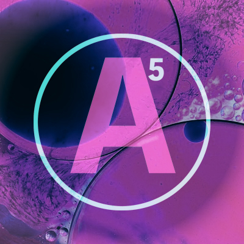
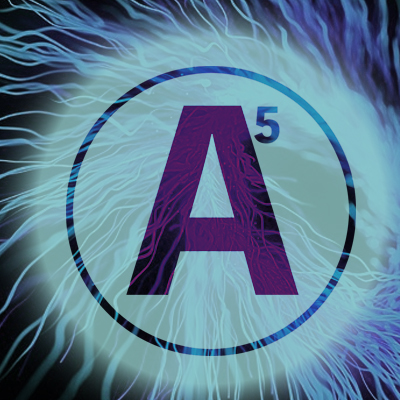

INTRODUCTION
 A new cultural centre and social learning hub to stimulate the mind through multisensory learning. Bringing people together, igniting and exciting the imagination through contemporary science and art workshops, events and activities. Fostering a creative edge in anyone and marrying inspired thinking with innovation, technology, learning and socializing.
Our venue will house a beautiful, contemporary café-bar, studios and store but our primary source of revenue will be through unique workshops held in atmospheric 'studiolabs'. These studiolabs, with interchangeable lighting, sound, scent and expert tutors, will create drama and a truly memorable learning experience.
Customers will linger and mingle in our unique and playful café bar, serving up simple yet inventive, locally made finger foods, experimental drinks and great coffee. The large, open space will also host regular ticketed events, debates, talks and exhibitions, bringing people together from many diverse groups and creating a '3rd Space' for socializing, fusion and magical serendipity.
DEMOGRAPHIC, ECONOMIC, SOCIAL AND CULTURAL FACTORS

Canada's economy needs innovative and creative thinkers and makers to evolve and develop. Schools are designed for the needs of a 20th Century workforce but we are in the midst of a technological revolution and the outdated curriculum is narrow and often dampens the flames of imagination. As a society we spend an unhealthy amount of time at computer screens, on smart phones, tablets and TVs. Information input overload, where are the opportunities to create output through imagination, creativity and experimental play and learning? The physical body has many opportunities for development through gyms and sports but where can our brains get a work out? How can we encourage discovery, innovation and creativity outside the formal educational environment? Inspired thinking comes from curiosity and excitement, fun and experience. It is vital to true learning and development.
The Canadian Government's Innovation Agenda 2016 states that, "The goal of education should be to make every Canadian "innovation ready"-ready to spot opportunities, imagine possibilities, discover new ideas, learn and grow. Developing a mindset that fosters creativity, risk-taking and ambition to succeed in the global marketplace should start early in life. Science, technology, engineering and financial literacy should be taught alongside business, math, social science and the arts."
Having taught in the secondary school education system for many years, I realize how difficult it is and how long it takes to make changes work within the system. I know first hand, how the system suppresses true creativity and innovation. A5 operates outside the system, it has the ability to adapt quickly and meet trends accordingly but also reinforces and believes in the goals of Canada's Innovation Agenda.
Ottawa's stable, health conscious, educated, cultured and wealthy population seeks value in new experiences and want the best for their children and grandchildren. They know our rapidly changing world needs creative thinkers and new skills. They desire quality, stimulating experiences and recognize the benefits of spending time together, face to face, enjoying and learning. A high proportion of empty nesters and retirees need places to socialize and spend time in worthwhile and enjoyable activities that link the community rather than separate it. Spending time with others, socializing and learning are not only have cognitive benefits but the social aspects are great for mental health too. "Socialization produces feelings of happiness, reduces stress, anxiety and depression and even improves cognitive function, quality of life and longevity. Humans are, by nature, social creatures."
Spending up to 90% of our time on screens deprives us of this basic human need. A5 is a place where people can spend time together, relax, learn and have fun in a welcoming, stimulating environment.
PRODUCTS AND SERVICES
 "Imagination is more important than knowledge. For knowledge is limited to all we now know and understand, while imagination embraces the entire world, and all there ever will be to know and understand." - ALBERT EINSTEIN
Workshops are 1, 2 or 3-hour experiences costing $25 per hour plus a small charge for materials if necessary. They can be done with friends, children, grandchildren, friends, partner or strangers. Part of the beauty is that you don't have to sign up to a long-term commitment.
-Invention workshops, electronics, new products, redesign old ones.
-Photography editing, portraiture, manipulation, presentation, macro and montage.
-3D printing and experimenting with new technology.
-Imagination station - writing workshop with sensory inspiration and deprivation.
-Up-cycling furniture clothes and lighting, toys electronics.
-Wood and leatherwork, laser cutting, model making, skateboards, go-carts, carving, etc.
-Big Art, giant montages, murals, sculpture and installation.
-Metal work, invention, soldering, jewelry and electronics.
-Light projection, manipulation and experimentation with color, ultra violet and lasers.
-Special effects make up, experimentation, latex, body painting and henna art.
-Kitchen chemistry, fizzics and product invention.
-Video making for posterity and editing for you tube etc.
-Dressing up and costume making for film, photography, theatre and events.
-Little medics - fix it with plants and the power of nature.
-Scent science and the art of perfumery.
-Customizing helmets, head dressing and hat making.
-Architecture, model building, miniature gardens and landscapes.
-Destroy the toy - make a monster.
-The art of sound, make some noise, sound effects for film and music.
-New product development marketing and sales.
Customers will leave with new knowledge, a sense of achievement and handouts on workshops for future reference. They will leave with something tangible, self-made and work to be proud of. With a membership package, members will have access to our online resources such a library of sounds, images and workshop notes and videos.